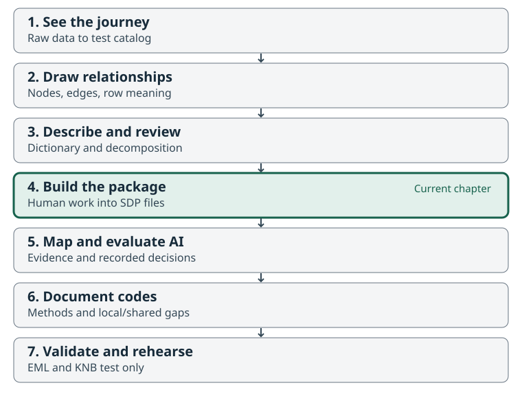
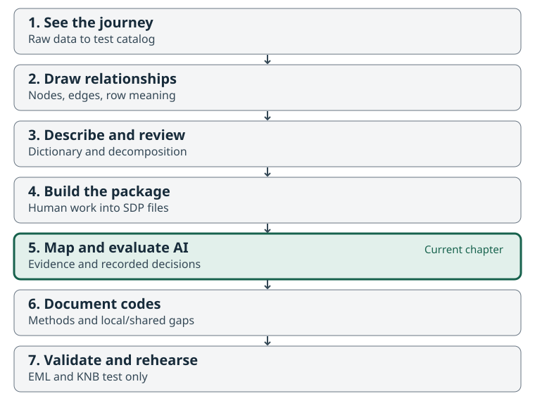
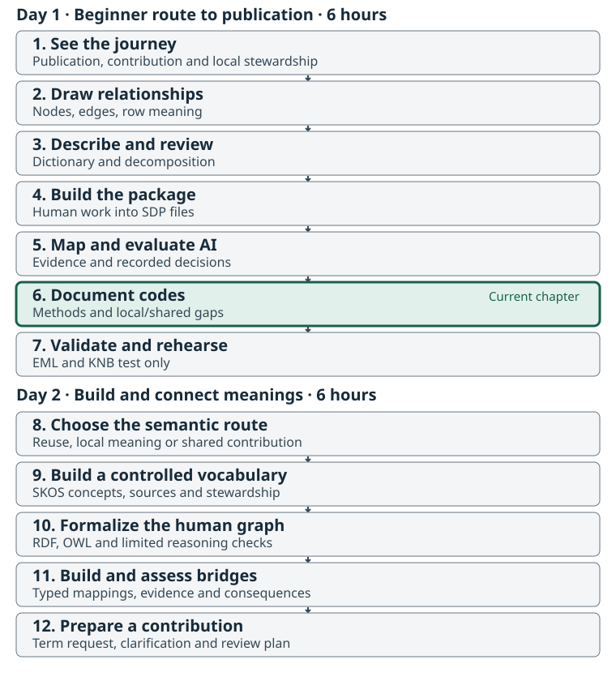
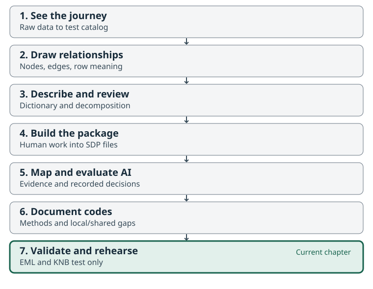

All in One View
Content from See the Whole Journey: From NuSEDS to Reusable Data
Last updated on 2026-09-08 | Edit this page
Estimated time: 55 minutes
Overview
Questions
- What changes between a source spreadsheet and a reusable published dataset?
- What will we make at each stage of the workshop?
- Why do we describe the data ourselves before using packaging software or AI?
Objectives
- Recognize the source table and the intended catalog destination for the same Fraser Coho example.
- Name each stage’s problem and output without needing to run the software.
- Distinguish data values, descriptions of those values, and links to shared definitions.
- Explain why the first working diagram and dictionary must precede metasalmon and AI.

Start with the destination
Imagine finding a salmon dataset produced by another team. Can you tell what was estimated, which population and place it concerns, how the estimate was made, and whether it is suitable for your question? A download button alone cannot answer those questions.
The facilitator begins with the Fraser Coho teaching record, then opens the source CSV beside it. The reference page records the endpoint’s actual status and evidence. A draft or test record is a demonstration; it is not evidence that this workshop has a verified public deposit. If a verified endpoint is still pending, use the supplied local publication preview and say so explicitly.
This is a tour of the result, not a software exercise. Participants do not send data to metasalmon or AI in this chapter. We will first create our own diagram and dictionary, then review them with another person in Chapters 2–3.
What to look for in the record
Follow four questions rather than every catalog field:
- What is this? Find the title, scope, source and contact information.
- Can I use it? Find the access conditions, licence and important caveats.
- Can I understand it? Locate the table description, column definitions and method information.
- Can I trace it? Follow the source and version information back to the packaged table.
These are practical aims of FAIR: findable, accessible, interoperable and reusable data. Accessibility may involve stated conditions; FAIR does not mean that every dataset must be openly downloadable.
Meet our one shared example
Download and extract the Fraser Coho workshop kit.
Everyone follows the 173-row, 14-column NuSEDS Fraser Coho
2023–2024 slice in
raw_data/nuseds-fraser-coho-2023-2024.csv. Open a copy for
viewing in a spreadsheet, or follow the projected table. Keep the source
file unchanged.
The slice comes from Fisheries and Oceans Canada’s Fraser and BC Interior NuSEDS workbook. The kit preserves its source information, derivation and the current official DFO dictionary. That dictionary was retrieved on 8 September 2026 and may postdate the workbook used for this slice. It is a selected two-year teaching dataset, not the full NuSEDS database or a complete history of Fraser Coho.
The table contains 87 distinct POP_ID values and
164 distinct population–analysis-year pairs across 173
rows. Some pairs occur more than once. A row is therefore a
source record associated with a population, waterbody and analysis year;
population plus year is not a verified unique key.
Later we will examine what additional context distinguishes the records.
Do not delete repeated pairs or sum their estimates during the
workshop.
Six columns let us practice the main kinds of description:
| Source column | What we can see | Question that still needs evidence |
|---|---|---|
POP_ID |
A population identifier, such as 46200
|
What source unit does the identifier denote? |
WATERBODY |
A named waterbody, such as BONAPARTE RIVER
|
How does this named place relate to the population record? |
ANALYSIS_YR |
2023 or 2024: the year the estimate is
for |
Why can contributing surveys extend into the next calendar year? |
SPECIES |
Coho throughout this slice |
How is the source species label defined? |
NATURAL_ADULT_SPAWNERS |
Numerical estimates and 13 blanks | What does “natural” qualify, and what does a blank mean? |
ESTIMATE_METHOD |
Labels such as Area Under the Curve
|
How does the stated procedure affect interpretation? |
We will write descriptions for these six fields ourselves. The other eight fields remain in the table and must also be read and reviewed. A focused exercise is not permission to discard context.
Values and descriptions do different jobs
The first record associates population ID 46200,
BONAPARTE RIVER, analysis year 2023,
Coho, estimate 758 and method
Resistivity Counter. Those are data
values. Explaining what the identifier, estimate and method
mean is metadata: information that
helps someone interpret and reuse those values.
An identifier is a label used to refer to something. It is not the thing itself. Likewise, a waterbody, a biological population, a species category and a Conservation Unit describe different things. The table has no Conservation Unit field. We can discuss that wider context, but we cannot invent a CU assignment from these rows.
One compound name is enough to motivate the next chapters:
NATURAL_ADULT_SPAWNERS. A variable describes the question being
represented, while its property is
the characteristic of interest, such as abundance, and its entity is the thing the data concerns.
“Adult”, “natural”, the place, the year basis, the unit and the method
may add different kinds of meaning. We will separate them and record
uncertainty instead of treating the column name as a complete
definition.
The journey we will follow
| Chapter | Problem it addresses | What you leave with |
|---|---|---|
| 1. See the whole journey | A useful final result is hard to picture | A shared purpose and one reuse question |
| 2. Draw the dataset | Relationships and row meaning are implicit | A human-created node-and-edge diagram with evidence and questions |
| 3. Describe and decompose | Short column names hide assumptions | A dictionary, variable decomposition and peer-review record |
| 4. Build the package | Meaning and data can become separated | An SDP built from the same table and reviewed human descriptions |
| 5. Compare AI-assisted interpretation | Automated suggestions can seem more certain than their evidence | A comparison with the human baseline and documented decisions |
| 6. Review shared meanings | Similar labels may represent different concepts | Reviewed mappings, code meanings and unresolved term questions |
| 7. Validate and share | A valid file alone is not a reusable publication | A checked package and an honest publication handoff |
Diagram → dictionary and decomposition → human peer review → metasalmon → AI-assisted comparison. This order is part of the method. Your first explanation of the dataset must exist before tools propose one for you.
A few names you will hear later
A Salmon Data Package (SDP) keeps the table, data dictionary, code
definitions, dataset description and other context together.
metasalmon in R and metasalmonpy in Python
help create and inspect that package. We introduce their names here;
detailed commands belong in Chapter 4.
The workshop Glossary is a reading aid: it explains words used in these lessons. A controlled vocabulary is a maintained set of terms and definitions used to describe data consistently. Reading a glossary entry helps you understand the discussion; choosing a vocabulary term requires checking its maintained definition against your data.
An ontology also states relationships between concepts. An IRI is a stable identifier used to refer to a term. Later, we compare the meaning we have documented with candidate definitions in the Salmon Domain Ontology and other resources. Similar wording does not establish an exact match.
EML is a structured format for ecological metadata. Catalogs such as KNB, part of the DataONE network, use metadata to help people discover and assess data. We will return to the opening record in Chapter 7 and explain how the workshop’s artifacts support it.
Activity: Read the example as a future user
In pairs, inspect the source table and teaching record or local preview. Spend 10 minutes identifying one question you could answer from the table and one you could not answer safely.
Then write three short notes:
- The field or value that raises your question.
- The description, relationship or source evidence that would help.
- The workshop stage where you expect to resolve it.
Share one example. Keep unanswered questions for the diagram and dictionary exercises. An unresolved question is a useful result; an invented answer is not.
- The same 173-row, 14-column Fraser Coho slice carries every chapter.
- A reusable dataset needs understandable values, context, relationships, sources and access conditions.
- The dataset has 164 distinct population–year pairs; that pair does not uniquely identify every row.
- We draw and describe the dataset, then peer review our account, before using metasalmon or AI.
- A catalog preview, a draft record and a verified public deposit have different statuses.
Content from Draw the Dataset Before Using Tools
Last updated on 2026-09-08 | Edit this page
Estimated time: 55 minutes
Overview
Questions
- What is a row about, and which things must remain distinct?
- How can a simple diagram make hidden relationships and assumptions visible?
- What should we record now so the diagram could support formal ontology work later?
Objectives
- Draw a node-and-edge model of the Fraser Coho table using plain-language relationships.
- Distinguish source records, population identifiers, waterbodies, species, years and estimates.
- Link diagram statements to source fields and mark unsupported relationships as questions.
- Save an editable diagram and text-based node/edge tables before using packaging or AI tools.

Start with people and the source table
Use the same raw_data/nuseds-fraser-coho-2023-2024.csv
from Chapter 1. This chapter uses paper, a whiteboard or an ordinary
drawing application, plus a spreadsheet or text editor. Do not
load the dataset into metasalmon or an AI service. First make
your own account of what the data is about.
Work inside the extracted kit:
fraser-coho-workshop/
raw_data/ source CSV and supplied source information
worksheets/ your diagram tables, dictionary and review record
reference/ draft worked examples and scientific-review questions
scripts/ used after the human review in Chapter 3
output/ used for later generated packagesThe worksheets are editable. Preserve the source files. If working on
paper, photograph or scan the finished diagram and keep it in
worksheets/; also complete the node/edge tables so the
relationships can be read without an image.
What a simple graph adds
A node names something relevant to the dataset. An edge states how one node relates to another. Write a short verb phrase on each arrow, such as “identifies”, “is reported for” or “has result”. An unlabelled line leaves its meaning to the next reader.
Give each node a local ID such as N1. These IDs connect
the diagram to the worksheet. They are not official NuSEDS identifiers
or newly minted ontology terms.
| Record | What to write |
|---|---|
| Node | Local ID, plain label, kind of thing, related source fields, evidence, status and any question |
| Edge | Start-node ID, relationship phrase, end-node ID, related source fields, evidence, status and any question |
The supplied node worksheet and edge worksheet provide these columns. Use “observed in file”, “working interpretation” or “question” to show the kind of support behind a statement.
Begin with row meaning
Row grain describes what one record represents and the context needed to distinguish it from others. Start your drawing with a source record, then add the things that the record identifies or describes.
The source has 173 rows but only 164 distinct
POP_ID–ANALYSIS_YR pairs. For example,
POP_ID 46170 has two records for
2023: NICOLA RIVER (DAM) and
NICOLA RIVER (DOT). Both have a blank adult-spawner
estimate and NO SURVEY THIS YEAR classification. Their
shared population/year values are not evidence that one row should be
removed.
Draw the distinction between:
- the identifier value in
POP_IDand the source population it identifies; - the waterbody name and the place it refers to;
- the species label and the population/organisms being described;
- the analysis-year value and the biological or reporting basis that gives that year meaning;
- an estimate result and the observation or estimation activity that produced it.
Do not assume every row represents exactly one field visit. The source’s method and survey-window fields may summarize work; the exact observation/estimation structure remains a question for source review.
Where does a Conservation Unit fit?
A Conservation Unit, a biological population, a species and a stream are not interchangeable levels of one simple hierarchy. The current NuSEDS catalog description describes populations by freshwater location and run timing, referenced to stream mouths; those populations can be grouped by CU. This table has no CU column or population-to-CU membership table. You may add a dashed “CU relationship to investigate” node beside your graph, but do not assign a CU, draw an asserted membership edge, or label the relationship “is a” without supporting evidence.
Use the same discipline for stream relationships. “This source record names this waterbody” is supported directly by the table. The current official dictionary describes the waterbody or portion that bounds the population on its source estimate document (SEN). “This population occurs only in this waterbody” is a stronger biological claim that the table alone does not establish.
Expand one estimate into meaningful parts
The Salmon Domain Ontology’s metamodel view provides a plain-language guide. It is an optional, non-normative orientation model; the shared ontology’s core modules hold its reusable definitions.
For NATURAL_ADULT_SPAWNERS, add nodes that help
distinguish:
| Part | Plain-language question |
|---|---|
| Entity | What population or group does the estimate concern? |
| Property | What characteristic is represented, such as abundance? |
| Variable | What complete data question is the column answering? |
| Observation or estimation activity | What work produced the result? |
| Result and unit | What value was reported, and in what units? |
| Method | How was the result determined? |
| Constraint and other context | Which qualifiers change the meaning or scope? |
Use 758 from the first source record as a labelled
example value, not as the definition of the variable.
Relate ESTIMATE_METHOD to the estimation activity. The
current official dictionary defines adults as mature fish excluding
jacks and the year as the year the estimate is for; surveys may extend
into the next calendar year. It does not establish a natural-origin
restriction. Keep that qualifier, applicability of current definitions
to the source workbook, and any additional biological year-basis claim
as review questions. The next chapter makes these distinctions explicit
in the dictionary.
Keep a route to later formalization
We are making a conceptual model, not writing OWL. Clear labels, typed nodes, directed relationships, evidence and uncertainty will help an ontology specialist formalize the model later. A local diagram does not approve new terms or prove equivalence with an existing term.
Keep broad kinds of things separate from examples. A box labelled
“waterbody” and an example BONAPARTE RIVER should not
silently become the same object. Record whether a node is a concept,
source record, identifier, example value or unresolved placeholder. The
typed distinction is more useful now than formal syntax.
Activity: Draw, explain and revise
- Draw for 15 minutes. Include the six focus fields, one source record, one example value and the entity/property/variable/activity/result distinction. Label every relationship.
- Explain for 10 minutes. Your partner traces one row through the drawing. Ask which arrows come directly from the file and which need a definition or other source.
-
Revise for 10 minutes. Correct ambiguous arrows,
mark questions, and enter the nodes and edges in
worksheets/dataset-nodes.csvandworksheets/dataset-edges.csv. Save the editable drawing or paper capture with them.
Use the draft
working diagram only after making your first drawing. It is a
comparison aid, not a scientifically approved answer key. Its node
and edge
tables expose the underlying statements;
reference/dataset-graph-working.md in the kit explains its
limits.
{kind=link}
Checkpoint: every arrow has a label; its endpoints exist in the node table; the source-record grain is stated; population, waterbody, species and CU are not collapsed; questions remain visible. Keep the diagram for the formal peer review in Chapter 3.
- Draw the dataset before packaging it or asking AI to interpret it.
- A useful graph makes relationships, row meaning, evidence and uncertainty explicit.
- Population, waterbody, species and Conservation Unit are distinct; this table does not supply a CU mapping.
- The observation activity, variable and result value need different nodes.
- An editable diagram plus text-based node/edge tables supports later reuse and formalization.
Content from Write the Dictionary, Decompose Meanings and Review Together
Last updated on 2026-09-08 | Edit this page
Estimated time: 65 minutes
Overview
Questions
- What must a dictionary explain beyond column names and data types?
- How do we separate the parts of a compound measurement term?
- What evidence and peer review are needed before packaging or AI-assisted interpretation?
Objectives
- Write working definitions for six focus fields and review all 14 source columns.
- Decompose
NATURAL_ADULT_SPAWNERSinto distinct semantic roles without inventing unsupported qualifiers. - Reconcile the dictionary with the dataset graph and preserve source wording separately.
- Record an actual peer review, including unresolved questions, before moving to metasalmon or AI.

Turn the diagram into a usable explanation
Continue with the unchanged 173-row Fraser Coho table and your
Chapter 2 diagram. Open worksheets/data-dictionary.csv and
worksheets/variable-decomposition.csv from the kit in a
spreadsheet or text editor. This is still human interpretation
work: no metasalmon ingestion and no AI interpretation yet.
A data dictionary explains each field: what it means, how values are represented, which values or codes are allowed, what missing values may mean, and which sources support the explanation. It should help someone identify both appropriate uses and unresolved questions.
The dictionary
worksheet includes all 14 source fields. Six rows are marked for you
to write: POP_ID, WATERBODY,
ANALYSIS_YR, SPECIES,
NATURAL_ADULT_SPAWNERS and ESTIMATE_METHOD.
The other eight have draft working descriptions to read and amend. Keep
the original source description in its own column even when you question
it.
What to record
| Worksheet field | Purpose |
|---|---|
column_name, exercise_focus
|
Preserve the exact source name and identify the six writing exercises. |
source_description,
working_definition
|
Separate supplied wording from your own evidence-based account. |
field_role, value_format,
example_values
|
Explain the field’s job and representation. A number-shaped identifier is still an identifier. |
units, code_meanings
|
Record the measurement unit or N/A; retain exact category values and cite their definitions or explicit questions. The linked working code list gives source evidence and its limits. |
missingness, related_fields
|
Explain missing-value handling and the context needed to interpret a value. |
evidence, status,
open_question
|
Make support, review state and uncertainty visible. |
These are workshop interpretation fields. They are not a replacement schema for an SDP metadata CSV. Chapter 4 will show how reviewed descriptions map into the package’s own metadata fields, while the full worksheets remain supporting context.
Read the data and source together
Do not copy every statement from the supplied starter dictionary into your own definition. That dictionary is a starting point, not scientific approval. The kit also includes the official DFO dictionary and its retrieval record. It was retrieved on 8 September 2026 and may postdate the 2025 workbook used for this slice. Its current definitions support useful corrections to the starter. The scientific-review packet records the remaining questions that Brett will take to Bruno and Tom; its reviewer fields intentionally remain blank.
Keep these checks beside the six writing tasks:
| Field | Supported observation | Boundary to preserve |
|---|---|---|
POP_ID |
No blanks; 87 distinct IDs in this slice |
POP_ID plus year does not uniquely identify all 173
rows. Do not equate the source unit with a CU. |
WATERBODY |
Names include distinct Nicola River locations | A name in a record does not establish an exclusive population-to-stream relationship. |
ANALYSIS_YR |
Officially the year the estimate is for; surveys may continue into the next calendar year | Do not rename it brood year or equate it with every inspection date. |
SPECIES |
All rows say Coho
|
Preserve the source label; formal taxon mapping is a later review decision. |
NATURAL_ADULT_SPAWNERS |
13 blanks; some nonblank values have decimals | Preserve blanks and decimals. A source estimate is not necessarily an observed integer count. |
ESTIMATE_METHOD |
Nine distinct labels | Describe code meanings; do not assume all labels are interchangeable analytical procedures. |
The other fields supply population naming, area, run type, estimate
classification, estimate stage, survey-window dates and watershed code.
Correct AREA to NuSEDS subdistrict: the
official dictionary says subdistricts may differ from statistical areas,
particularly for Fraser streams. The starter’s PFMA wording should not
be copied as an accepted definition. For example, RUN_TYPE
contains 1, FALL and blanks, and
ESTIMATE_CLASSIFICATION includes
NO SURVEY THIS YEAR. That context can matter for an
estimate, but the classification alone does not explain every missing
value.
Decompose a compound variable
The Salmon Domain Ontology metamodel separates the thing being described, its characteristic, the complete variable, the activity, its result and its context. This optional teaching view is aligned with the ontology’s core; it is not a requirement to turn every phrase into an OWL class.
Use the decomposition
worksheet to unpack NATURAL_ADULT_SPAWNERS:
| Part | Working interpretation or question |
|---|---|
| Variable | The reported estimate of mature spawners excluding jacks; the field’s exact “natural” scope needs confirmation. |
| Entity | The population/group represented by the source record; the precise biological unit needs review. |
| Property | Abundance: the characteristic being represented. |
| Result value | A reported numerical estimate, such as 758; preserve
decimals and missing values. |
| Unit | Individuals is the supplied dictionary’s unit; retain that source and seek confirmation of the estimate’s interpretation. |
| Context or constraints | Coho in this slice; the current official adult definition excludes jacks. A natural-origin restriction is not established. Row-varying place and year are recorded separately. |
| Statistical modifier | Record only what the source establishes. Do not infer “count”, “total” or “mean” simply from the presence of a number. |
| Method | Refer to the row’s ESTIMATE_METHOD; its meaning belongs
with the procedure that produced the result. |
| Observation context and dimensions | Source population, waterbody, analysis year, survey-window dates, estimate classification and any other demonstrated context. |
The starter dictionary says “natural-origin adult spawners”; the current official DFO definition describes maturity and excludes jacks, without establishing natural origin. Our worksheet retains the starter phrase as source wording requiring review, alongside the more cautious working definition. It must not become an accepted natural-origin constraint merely because software finds a matching term. Likewise, a year value varies between rows; it is not a fixed constraint on the entire measurement column. The official definition identifies the estimate year; a claim that it is a brood year or another biological-year basis requires further evidence.
The ontology’s composition rules keep reusable abundance, unit, procedure, qualifiers and dimensions distinct. Your dictionary should do the same in plain language. Specific ontology identifiers and mapping strengths come later.
Peer review is the handoff to tools
Exchange the diagram, node/edge tables, dictionary and decomposition with another person. A peer review checks whether the explanation is understandable, internally consistent and honest about evidence. It does not grant scientific publication approval or settle questions beyond the available sources.
Use worksheets/peer-review.md to record the actual
reviewer, review date, observations, revisions and unresolved questions.
The supplied form starts with Completion: pending and a
blank reviewer. After the reviewer has checked the artifacts and
required revisions are complete, record their name and date (as
YYYY-MM-DD) and change that marker to
Completion: complete. Leave unresolved scientific questions
visible with a next step; never fill in a review that did not
happen.
An open scientific question can travel into a draft package as an open question. A missing human explanation or an undocumented peer review cannot be replaced by asking AI to supply one. Chapter 4’s build checks the review marker; the human review itself is what gives the marker meaning.
Activity: Write, reconcile and peer review
- Write for 20 minutes. Complete the six focus dictionary rows and the adult-spawner decomposition. Read all eight remaining rows and flag anything unclear. Check the units and code meanings against their cited sources; record questions where a definition is missing. Use examples from the unchanged source table.
- Review for 15 minutes. Your partner traces a source row through the graph and dictionary. Check the six focus fields, the other eight descriptions, blank handling, decimal estimates, the non-unique population/year pair, the unsupported natural-origin restriction, the supported estimate-year definition and any further year-basis claims.
- Revise for 10 minutes. Reconcile conflicting labels or relationships and record what changed. Complete the peer-review record only when the described review has actually occurred.
Compare your results with the draft dictionary and draft decomposition after your first attempt. They show a cautious working interpretation; they do not carry Bruno’s or Tom’s approval.
Ready for Chapter 4: the diagram and node/edge tables agree; all 14 dictionary fields have been read; the six writing tasks and one decomposition are complete; a real reviewer and date are recorded; unresolved questions remain explicit. Keep these human-created artifacts as the baseline against which you will later compare software and AI suggestions.
- Preserve source descriptions separately from your working interpretation.
- A dictionary explains value meaning, context, representation, missingness and evidence.
- Decomposition separates entity, property, variable, activity, result, unit, method and qualifiers.
- Use the current source definitions for estimate year, adults excluding jacks and subdistrict; retain the unsupported natural-origin restriction as a question.
- Complete a real human peer review before metasalmon or AI ingestion; save the baseline for later comparison.
Content from Build the Package from Your Human Description
Last updated on 2026-09-08 | Edit this page
Estimated time: 40 minutes
Overview
Questions
- How does our diagram and dictionary become a Salmon Data Package?
- Which facts can software infer, and which decisions must we supply?
- How can we rebuild a draft without losing our review work?
Objectives
- Confirm the human diagram, dictionary, and peer review are complete before using packaging tools.
- Build or inspect an SDP containing the same 173-row, 14-column Fraser Coho source.
- Trace a human-written description into its canonical metadata field.
- Distinguish draft validation from scientific review and publication readiness.

The problem: useful descriptions need to travel with the data
Your diagram explains the relationships. Your dictionary explains the columns. A Salmon Data Package organizes data and standardized metadata for another person and their software to inspect. This chapter transfers selected human descriptions into that structure while retaining the richer diagram and reasoning in the workshop project.
Before opening metasalmon or supplying anything to
AI, complete worksheets/dataset-nodes.csv,
worksheets/dataset-edges.csv,
worksheets/data-dictionary.csv, and
worksheets/variable-decomposition.csv. Record the actual
peer reviewer, date, decision, and remaining questions in
worksheets/peer-review.md. Revisit any relationship or
definition the reviewer cannot explain. A question may remain explicitly
unresolved; a guess must not become an asserted fact.
The facilitator’s reference/*-working.csv files are
comparison drafts. Copying them does not constitute peer review. Keep
your own decisions and their evidence visible.
Open the common workshop project
Download and extract the workshop kit, as described in
Setup. Work from its
fraser-coho-workshop/ directory. Keep the source file
unchanged throughout:
fraser-coho-workshop/
raw_data/nuseds-fraser-coho-2023-2024.csv
worksheets/ # your diagram, dictionary, and peer review
reference/ # facilitator comparison drafts and source notes
scripts/build_sdp.R # or build_sdp.py
checkpoints/ # supplied, labelled comparison stages
output/fraser-coho-workshop-sdp/The early column view was a way to focus attention. The package still
contains all 173 rows and 14 columns, with dataset ID
fraser-coho-workshop and table ID escapement.
POP_ID plus ANALYSIS_YR is not guaranteed to
identify one row: the source includes repeated population-year
combinations, including different waterbody records. Preserve those
distinctions.
Generate or inspect the draft
The kit build script checks the peer-review record before reading the
data into the packaging workflow. It starts with semantic seeding and AI
disabled, imports each column’s working_definition, and
refuses to overwrite an existing output. Read its comments so you can
trace the inputs and outputs.
Compare the supplied technical bindings with your human worksheet before building. Roles, value types, and the individual-count unit are supplied choices in the helper script; they are not automatically translated from your diagram or decomposition. Record any mismatch or open question. If a binding needs changing, review and edit the script before building. The source definitions and human reasoning remain your baseline for evaluating these choices.
Follow one description into the package
The field reference explains each metadata column and its allowed values. Use it while editing; you do not need to memorize the entire format.
| Human preparation | Package destination | What to check |
|---|---|---|
| Dataset purpose, source, and caveats |
metadata/dataset.csv and accompanying notes |
Credit the source and distinguish the teaching derivative. |
| What one row represents | metadata/tables.csv |
State the row meaning; do not declare a key without checking it. |
| Exact column name and working definition | metadata/column_dictionary.csv |
Definitions are imported by exact source column name. Compare the supplied role, type, and unit bindings with the worksheet before building. |
| Meaning of a stored category | metadata/codes.csv |
Preserve the stored value and describe its scope. |
| Human graph, decomposition, evidence, and questions | Working worksheets and reference notes in the project | Retain these for the later mapping review; the build copies only the
peer-review record into the SDP as
preparation-review.md. |
Software can suggest that NATURAL_ADULT_SPAWNERS holds
numeric values. The official NuSEDS dictionary describes mature salmon
excluding jacks; it does not establish a natural-origin restriction. The
header alone cannot resolve that distinction. Your source-based
definition and unresolved question must survive the build. The
dictionary’s measurement IRI fields are filled in Chapter 5 only when
their meanings are supported.
Do not append worksheet-only columns to the canonical metadata CSVs.
Methods that vary by row remain associated with the
ESTIMATE_METHOD code column; the SDP dictionary has no
general-purpose method_iri column.
Check the structure and keep the draft honest
Run the prepared validation script for your lane, or inspect the facilitator’s validation result:
Passing draft validation means that the tested structural rules pass. It does not approve a biological interpretation, establish a licence, or make the draft publication-ready. Checkpoint labels describe their actual stage: a technical reference remains a draft until its scientific review is recorded.
Activity: trace and explain one field
Work in pairs for 20 minutes:
- Confirm the graph, dictionary, and peer-review record were completed before this build.
- Build or open the draft, then find one definition you wrote in Chapter 3.
- Check that the package contains the full source table and keeps blanks distinct from recorded zeroes.
- Explain one validation message and one scientific question validation cannot answer.
- Save your evidence and current draft. If you need to rebuild, preserve this output and deliberately choose a new versioned destination; do not overwrite another person’s edits.
Your output is a traceable draft package, with its human preparation intact.
- Human diagramming, dictionary work, and peer review precede packaging tools and AI.
- The same full Fraser Coho source is used in every chapter.
- Canonical metadata fields have defined roles; the working worksheets preserve richer reasoning.
- A structural validation result is evidence about structure, not scientific approval.
Content from Map Meanings and Compare AI Suggestions
Last updated on 2026-09-08 | Edit this page
Estimated time: 70 minutes
Overview
Questions
- Does a suggested term express the meaning we established by hand?
- How do we distinguish a complete variable from its components?
- How can AI help us review without becoming the source of truth?
- Where do we record an acceptance, rejection, or unresolved question?
Objectives
- Compare suggested mappings with the human graph, dictionary, and source evidence.
- Review one measurement variable and its components without inventing missing meaning.
- Record a mapping decision and rationale that another reviewer can trace.
- Compare saved AI outputs as a common activity, with optional free-only live assessment.

The problem: the same label can describe different things
A controlled vocabulary gives a definition a reusable IRI. Linking to that identifier helps another system interpret our data. A convincing label alone does not establish that the definition fits.
Keep your human graph, dictionary, decomposition, and
worksheets/peer-review.md beside the package. They are the
reference for this review. The same full 173-row,
14-column source remains in
output/fraser-coho-workshop-sdp, with dataset ID
fraser-coho-workshop and table ID
escapement.
Begin with NATURAL_ADULT_SPAWNERS. The official NuSEDS
dictionary describes mature salmon excluding jacks; it does not confirm
that the values are restricted to natural-origin fish. The header does
not settle that distinction. Do not turn it into a natural-origin
constraint because an AI response or a nearby term suggests that
reading. Return to raw_data/official-nuseds-dictionary.csv
and the source notes, including the retrieval date, and retain the
question if they do not resolve it. The current dictionary may postdate
the workbook used to derive this teaching file.
Translate the human decomposition into mapping questions
A variable describes what is measured; a result is a recorded value. Keep the variable, observation context, and result distinct in your graph and dictionary.
| Review question | SDP destination | Source of the answer |
|---|---|---|
| What complete variable does this column represent? |
column_dictionary.csv: term_iri
|
Your supported variable definition. |
| What property is measured? | property_iri |
The decomposed characteristic, separate from the whole variable. |
| What entity is it about? | entity_iri |
The object of interest established in the human model. |
| What supported qualifier narrows the meaning? | constraint_iri |
Evidence for that qualifier; leave unresolved if uncertain. |
| In what unit is the result expressed? | unit_iri |
The unit definition and applicability to these estimates. |
| Does aggregation belong to the variable definition? | statistical_modifier_iri |
Evidence for a total, mean, peak, or other modifier. |
| What thing are these records about? |
tables.csv: observation_unit_iri
|
The object of observation; describe record context and row meaning separately. |
The field reference
explains which fields are conditional. A numeric identifier such as
POP_ID is not a measurement merely because its stored
values contain digits. Do not use measurement decomposition slots as
generic graph relationships for identifiers or names.
Methods belong where they apply: a table-level procedure when
constant, a protocol citation when supported, or a coded field when the
method varies among rows. Chapter 6 examines
ESTIMATE_METHOD.
Inspect saved candidates before deciding
The kit’s checkpoints/seeded-sdp/ contains saved
candidate evidence for the same source and IDs. Read its stage notes
before use. Candidates are drafts, and their retrieval date and package
version matter. A saved shortlist lets the group review the same
evidence even if a live vocabulary service changes.
Retrieval is separate from AI assessment. A retrieval score is a ranking signal, not a calibrated probability that the mapping is right. A single returned candidate can have rank 1 simply because no alternative was returned.
An empty queue is not a completed package. The queue contains returned suggestions; it does not prove that every necessary target was found, every definition was reviewed, or all publication facts are present.
Everyone compares the saved AI assessment
AI can point out missing context or propose a decomposition. The human artifacts come first so you can test those proposals against an independent interpretation instead of accepting fluent text as evidence.
Open ai/README.md in the kit and use the recorded
outputs it identifies. Read the input context, provider/model identity,
run date, and success or failure status. Compare actual saved responses;
do not treat an example prompt, a failed request, or a facilitator’s
hypothetical response as a completed model run. If a saved response is
unavailable, record that limitation and perform the source-and-candidate
review with the material that is present.
The common recording is ai/recorded-assessment.md,
produced by the Codex authoring assistant and preserved as such.
ai/recorded-suggestions.csv gives its individually numbered
propositions, and ai/comparison-worksheet.csv leaves your
human decisions blank. This is an actual authoring-assistant response,
not a successful OpenRouter run or native
semantic_llm_assessments output. Keep those origins
distinct when comparing a later live result.
Choose from the recorded propositions about natural origin (AI02), activity and result (AI04), year basis (AI05), method (AI07), missingness (AI08), and repeated population-year pairs (AI10). For the common comparison, each pair answers:
- Which parts agree with the human graph and dictionary, and on what evidence?
- Did the response confuse a variable with a result, an entity with an identifier, or a method with a property?
- Did it assign a meaning to “natural,” a blank, or
RUN_TYPE = 1that the sources do not establish? - Which suggestion would you retain, revise, reject, or leave unresolved?
Record the model’s suggestion separately from the final human decision. Agreement among models is not source confirmation.
Optional: run a free live assessment
Recheck that your diagram, dictionary, decomposition, and peer review
are complete before a live call. Read the payload and the provider
information in ai/README.md; only use the approved public
teaching material. A live AI request sends that context to the
provider.
The kit’s optional scripts use the fixed
openrouter/free route and do not fall back
to a paid model. Free availability and rate limits can change. If no
suitable free route is available or the request fails, use the saved
comparison activity and keep the failure visible.
Keep API keys out of worksheets, scripts, saved outputs, and screenshots. The response is review evidence; it is not an instruction to modify the package automatically.
Activity: make one defensible mapping decision
Use 20 minutes to compare the human decomposition with saved vocabulary candidates, and 20 minutes to compare the saved AI assessment and discuss it with a partner. A live call is an optional variation within that time.
Produce a record containing the target column and role, proposed interpretation, evidence, candidate IRI when available, decision, reason, reviewer, and remaining question. Include one rejected or unresolved claim when the sources do not warrant it. Revisit the graph if the review exposes an unsupported relationship.
The useful output is a justified decision, not a filled cell count.
- The human model and source evidence are the basis for reviewing suggestions.
- A complete variable, its components, observation context, and result are distinct.
- Saved AI output is a common comparison activity; live AI remains optional and free-only.
- Keep the candidate, human decision, and rationale together, including unresolved questions.
Content from Explain Code Values and Route Unresolved Meanings
Last updated on 2026-09-08 | Edit this page
Estimated time: 30 minutes
Overview
Questions
- What does each stored code mean in this source?
- When should a definition stay local, reuse a shared term, or become a term request?
- What should we do when the source does not settle the meaning?
Objectives
- Document a method value without changing the source code.
- Distinguish an actual procedure from a reporting label or missing-information state.
- Draft one evidence-based route for an unresolved meaning.

The problem: readable codes can still hide important distinctions
The same Fraser Coho package contains ESTIMATE_METHOD,
ESTIMATE_CLASSIFICATION, ESTIMATE_STAGE, and
RUN_TYPE. These columns answer different questions. A code list records the
exact stored values and what each one means in context. The code-field reference
explains the canonical metadata/codes.csv fields.
Return to your graph and human dictionary before assigning a shared definition. In particular, a method label does not establish whether an estimate is absolute or relative, and a numeric-looking run-type code does not establish a biological definition.
Inspect the method values in the unchanged source
ESTIMATE_METHOD varies by row, so its procedure
information belongs with those coded values. It must not be promoted to
one table-wide method merely because a single method is common.
| Stored value | Rows in the 173-row source | Review question |
|---|---|---|
Area Under the Curve |
84 | Which documented procedure does this label denote? |
Peak Live * Expansion |
39 | What is expanded, and under what assumptions? |
Not Applicable |
27 | Why is no method applicable in this record? |
Combined Methods |
12 | Which methods were combined, and where is that context recorded? |
Resistivity Counter |
4 | What procedure does the counter support? |
Sonar-ARIS |
4 | Does the source describe a method, an instrument, or both? |
Sonar-DIDSON |
1 | What procedure and instrument context are available? |
Fixed Site Census |
1 | What is counted and how? |
Fence |
1 | What operational definition accompanies this label? |
These are sample counts, not claims about all NuSEDS records.
Not Applicable is not automatically a procedure.
Combined Methods needs context that a generic label may not
supply.
Every observed non-empty value in a categorical column needs a
matching code row. A vocabulary_iri alone does not explain
undocumented values. Do not replace a source value with a prettier label
and lose the link back to the data.
Decide where a meaning belongs
An ontology can express concepts and their relationships; an organization also needs authority to maintain its own definitions. Sharing a word does not mean sharing its exact meaning.
| Finding | Next action |
|---|---|
| An existing shared definition fits the supported local meaning | Reuse its IRI and record the evidence. |
| A well-supported concept could be reused across organizations | Draft a request for the Salmon Domain Ontology or the appropriate shared vocabulary. |
| The definition depends on DFO policy or NuSEDS operations | Keep the local definition explicit and consider the DFO-specific resource or a local profile. |
| The source evidence is insufficient | Retain an unresolved question and identify the person or document that could answer it. |
A POP_ID is a source-system identifier, not
automatically the name of a new domain class. A label containing
“natural” is not enough evidence to mint a natural-origin concept.
Broadly useful concepts and locally governed definitions can be
connected later with a documented mapping whose strength matches the
evidence.
The packages provide detect_semantic_term_gaps() and
render_ontology_term_request() to prepare candidate
requests. Their suggested route is review evidence, not a governance
decision. A saved suggestion CSV cannot prove that every zero-candidate
target or later human rejection was included, so check it against your
own unresolved-question log. Rendering a request does not submit it.
Draft one useful request or source question
Keep the draft in your workshop notes. Include the source column or code, the supported meaning, examples from this dataset, evidence, nearby terms that do not fit, the proposed route, and the unresolved question or requested change. Refer back to the relevant graph node or edge and dictionary row.
The workshop does not post requests automatically. A maintainer can review a draft at the Salmon Domain Ontology request page or the DFO Salmon Ontology request page when a request is warranted. Organizational vocabulary construction and formal ontology editing are extensions.
Activity: explain one method and one unresolved meaning
In 15 minutes, choose one method value and check its source definition with a partner. Record the exact code, its interpretation, and the evidence. Then choose one unresolved question from your graph, dictionary, or mapping review and draft its next action.
Success is a code explanation that preserves the source meaning and a route another person can assess. An honest request for source clarification is a useful outcome.
- A readable source label still needs context and evidence.
- Row-varying methods remain linked to their code values.
- Reuse, shared contribution, local definition, and unresolved source questions are different outcomes.
- Term requests are drafts for human stewardship decisions.
Content from Validate, Inspect the Test Record, and Explain Publication
Last updated on 2026-09-08 | Edit this page
Estimated time: 45 minutes
Overview
Questions
- What distinguishes a good finished package from a structurally valid draft?
- How does an SDP become EML and a catalog record?
- What can a test deposit demonstrate, and what would production publication add?
Objectives
- Trace source data, human interpretation, reviewed metadata, EML, and catalog objects.
- Interpret strict validation without confusing it with scientific approval.
- Inspect the clearly labelled KNB test teaching record or its supplied local artifacts.
- Explain production publication steps without executing a production deposit.

The problem: a reusable package needs both meaning and a reliable access path
At the start of the workshop you saw the destination. Now follow the evidence that connects it to the source: unchanged rows, a human diagram, definitions and decomposition, recorded mapping decisions, code meanings, and a package another person can interpret.
A good finished product is more than a set of non-empty cells. Its context supports its claims, unresolved questions are visible, files agree, and the intended reader can find and use it. The reference page identifies the current teaching record and its verification status.
Our catalog exercise uses the KNB Test Node, with the same 173-row, 14-column Fraser Coho source. The official source remains on Open Canada. We do not create another production publication of it in this workshop.
Check what is ready and what still needs work
The classroom draft is output/fraser-coho-workshop-sdp.
Preserve it, its worksheets, and the actual review decisions. The kit’s
checkpoints/reference-sdp/ is a facilitator comparison
artifact; read its stage and review notes before describing it as
reviewed. A technical validation result does not substitute for a named
human scientific review.
Use these questions to assess the package:
| Check | Evidence to inspect |
|---|---|
| Is this still the same source? | All 173 rows, 14 columns, and values; source checksum and derivation record. |
| Can another person explain the rows and columns? | Human graph, dictionary, decomposition, and recorded peer review. |
| Are measurement mappings supported? | Source definitions, chosen terms, rejected suggestions, and remaining questions. |
| Are code values described? | Code coverage plus source-based definitions and method context. |
| Are descriptive and publication facts defensible? | Attribution, contacts, source licence, temporal coverage, provenance, and intended access. |
| Do files agree technically? | Validation results, descriptor consistency, checksums, and the EML schema result. |
The source has 13 blank spawner estimates and 14 recorded
zeroes. These are different observations about the file. Do not
convert blanks to zero or infer that Not Applicable has one
universal relationship to a missing estimate.
Run the strict package check
If your draft cannot pass, retain the report and its unresolved questions. You can still trace the rest of the process using the supplied same-source reference artifacts. Clearly distinguish a step you executed from a result you inspected.
The reference passes the pinned MetaSalmon strict package check and
EML validation, but the separate smn-data-pkg validator
rejects the semantic keys projected into its descriptor. This is known
item #90 in the MetaSalmon backlog; it is not a reported pass of every
validator. The kit contains an
unposted
issue draft and exact reproducer. Keep that result separate from
scientific review and the teaching-record status.
Follow the package into EML
EML, Ecological Metadata Language, expresses discovery and data-description metadata in a standard XML structure. It is a downstream representation of the package, not a replacement for the human preparation or canonical SDP metadata.
The exporter needs facts that cannot be recovered from column names
alone: structured parties, rights, methods, measurement scales,
missing-value meanings, and source context. The reviewed
metadata/eml-mapping.yml sidecar supplies such facts. This
is where details deferred from Chapter 1—numeric versus nominal domains,
date domains, and EML field requirements—become useful.
Inspect metadata/eml-mapping.yml and any supplied
publication/test/eml.xml in the reference checkpoint. Trace
one source-column definition into the EML attribute description. Then
find the source citation, teaching-record label, and test-environment
URLs. Use the canonical SDP-to-EML
workflow and mapping
template for the full requirements.
The pinned R and Python exporters also require checksum-bound semantic evidence and accepted-selection files. The R package validates this closure but does not provide a general public function that produces every required file. The supplied reference build must document how those artifacts were made and what was actually reviewed. Do not fabricate a reviewer, licence, checksum, missing-value explanation, or accepted decision to satisfy the exporter. This limitation can be retired when the pinned release supplies and verifies the complete producer workflow.
Preview a test deposit
A dry run plans the identifiers, files, checksums, access policy, and
relationships without credentials or network calls. The workshop scripts
explicitly target knb_environment = "test" and use the
expanded representation so the metadata files remain individually
inspectable.
Run this only when the package has the required export facts, or
inspect the supplied reference plan. The script requires an explicit
package copy beneath output/ and refuses checkpoint paths.
For practice, copy the reference checkpoint to a new destination;
preserve the supplied checkpoint and its stage notes. This copy does not
make its scientific review complete.
Test output belongs under publication/test/. A test
deposit uses urn:node:mnTestKNB at
https://dev.nceas.ucsb.edu/, with DataONE staging services.
The test route requests no preservation replicas, cannot receive a DOI
through this workflow, and is not a durable production record. Test
objects are not promoted to production.
Inspect the teaching record
Open the teaching-record link and status. It is explicitly labelled “Workshop demonstration — KNB Test Node” and links to the official source. Check the current access and verification note before the activity.
For a verified public test record, each learner should be able to open it without signing in, read the metadata, and download the intended example files. Follow a description from the source and human dictionary into the displayed catalog metadata. Inspect the separate package components and their relationships.
If the reference page says the deposit is pending, private,
unavailable, or not yet verified, use the supplied local artifacts and
screenshots and report exactly that status.
published_pending_catalog means object storage has
progressed but the required catalog evidence is incomplete. It is not a
completed catalog demonstration, and recreating identifiers does not fix
the indexing question.
Test services can change or remove records. The downloadable kit remains the common classroom reference and makes the example inspectable when the test service is unavailable.
Explain the production steps without executing them
A production publication needs its own source-rights decision, final metadata review, repository choice, intended access, and responsible depositor. It also needs a fresh production plan and production identifiers. A test record is never a shortcut around these decisions.
For an appropriate future dataset, the sequence is:
- Confirm source rights, attribution, intended reuse, and whether another production deposit is warranted.
- Complete human scientific review, package validation, and EML validation.
- Review a fresh plan for the named production repository and intended access.
- Have the authorized depositor make the production deposit with the correct authenticated identity.
- Verify object integrity, access, catalog indexing, and the user-facing record.
- Follow the repository’s public-release and DOI process when applicable, and preserve the record for later versioning.
These are explanatory steps in this workshop. The learner scripts contain no live upload or production-deposit action. The source’s existing Open Canada record remains the authoritative source publication.
For a later metadata revision, preserve the previous package and manifest, build a new version in a separate directory, document the change, and review its new plan. Published object bytes and identities are not edited in place.
Activity: tell the full story of one estimate
In 20 minutes, trace one NATURAL_ADULT_SPAWNERS record
through the source, human dictionary, diagram, mapping decision, EML,
and catalog or supplied local representation. Explain its
population/year context and method, preserving any source
uncertainty.
Finish by identifying one requirement that a production publication would add and one claim that technical validation alone cannot justify. Mark each step as executed, inspected, or not yet available in your notes.
- A good finished package combines supported meaning, traceable evidence, and usable access.
- Strict validation and schema-valid EML do not establish human scientific approval.
- The classroom destination is a clearly labelled test demonstration of the same NuSEDS source.
- Production publication is explained, separately authorized, and not executed here.